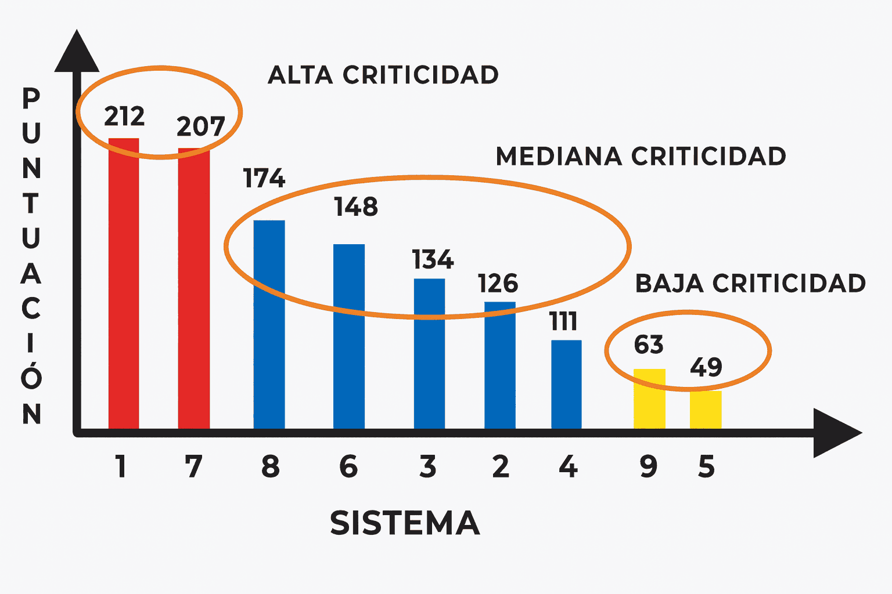

Proceso paso a paso para el cálculo del nivel de criticidad
El Análisis de Criticidad (AC) es una metodología "semi-cuantitativa" para dimensionar el riesgo que permite establecer jerarquías o prioridades de instalaciones, sistemas, equipos y dispositivos (ISED'S), de acuerdo a una figura de mérito llamada "Criticidad"; que es proporcional al "Riesgo": La Criticidad se calcula mediante la siguiente ecuación:

Sigue estos 5 pasos para completar el análisis
Se debe asignar un valor a cada uno de los criterios de criticidad, considerado como factores evaluados.
Luego se carga el valor asignado en una tabla, por cada uno de los criterios.
Después se multiplican los valores asignados por cada uno de los criterios de criticidad para cada uno de los activos.
Luego se multiplica el valor ponderado por criterios de criticidad por la frecuencia de fallas.
Luego se define los rangos de los equipos en base al ponderado final y se clasifican los equipos por niveles de criticidad en grupos en base a sus puntajes obtenidos.